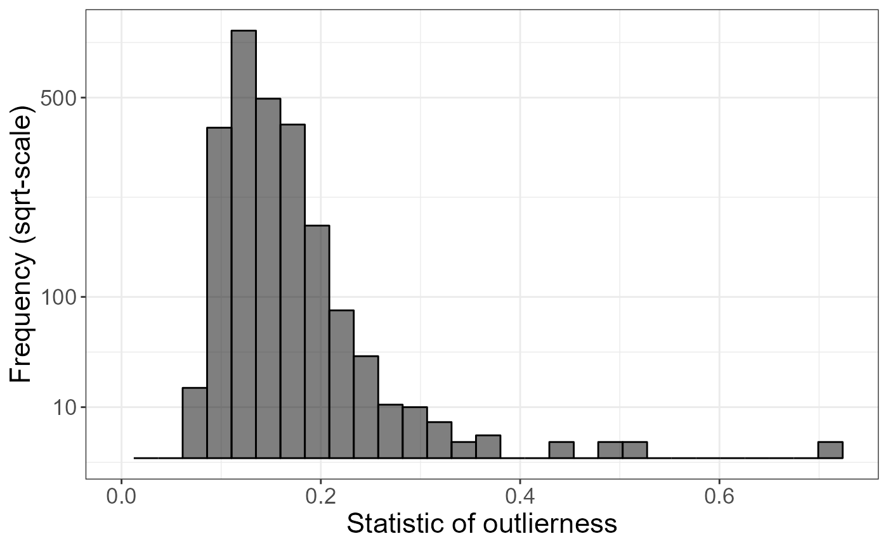
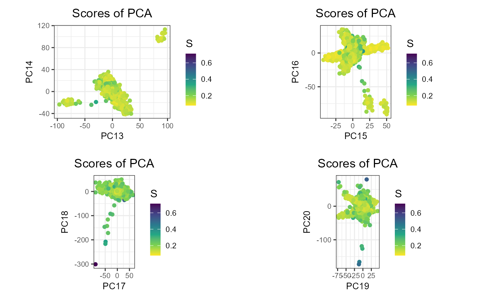
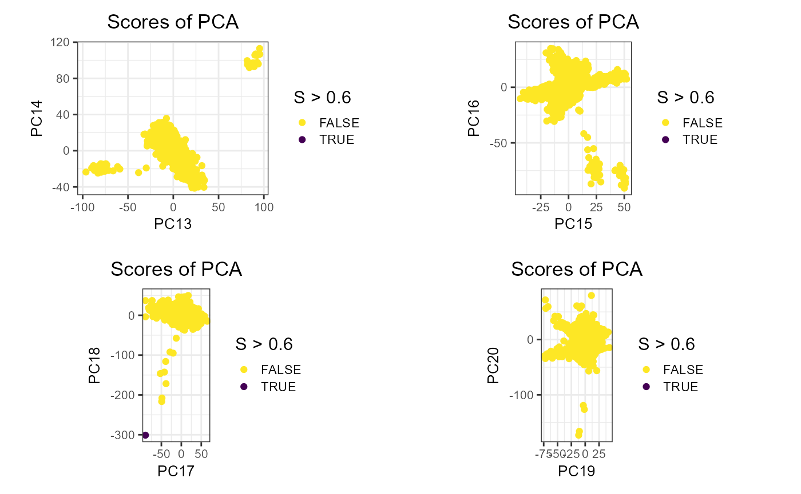
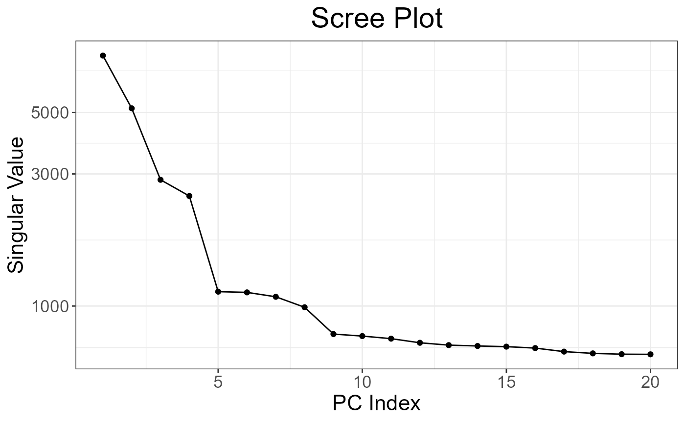
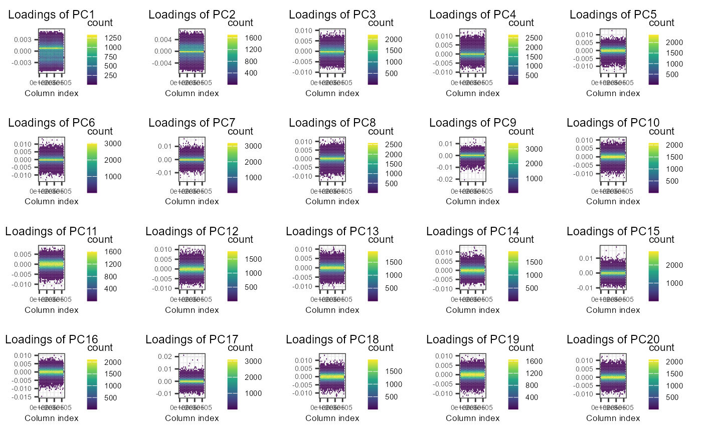
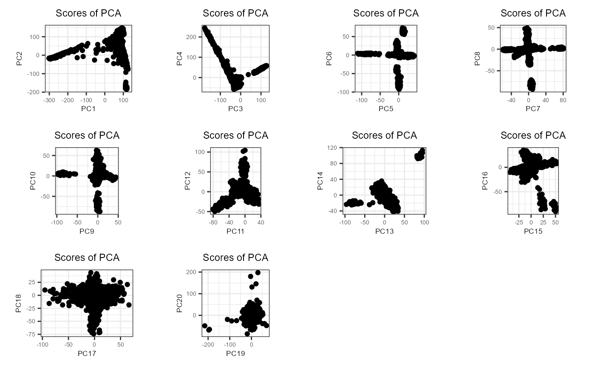
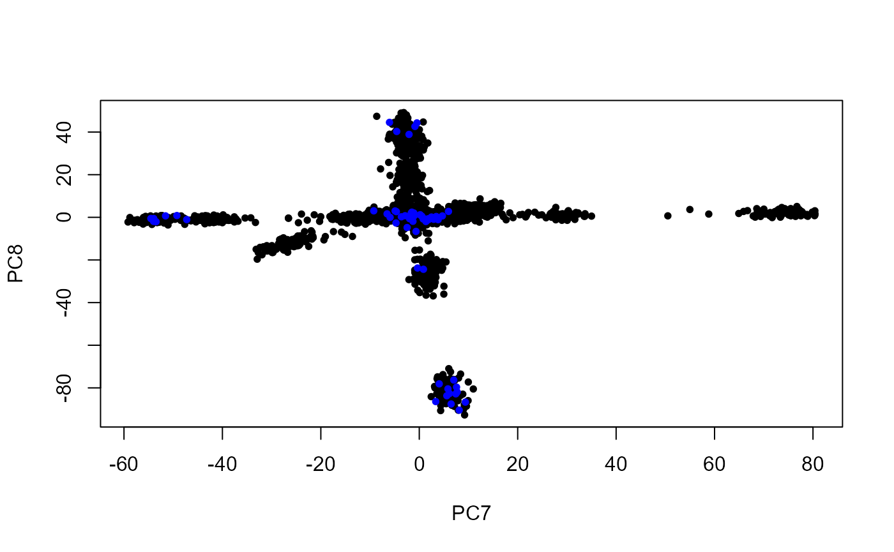

Principal Component Analysis
Florian Privé
November 13, 2019
Source:vignettes/bedpca.Rmd
bedpca.RmdThis vignette showcases the different steps and best practices recommended in this paper.

Data
## Loading required package: bigstatsrLet us use a subsetted version of the 1000 Genomes project data we
provide. Some quality control has already been done; otherwise, you can
use snp_plinkQC().
bedfile <- download_1000G("tmp-data")Relatedness
First, let us detect all pairs of related individuals.
## 'data.frame': 31 obs. of 8 variables:
## $ FID1 : int 0 0 0 0 0 0 0 0 0 0 ...
## $ IID1 : chr "HG00120" "HG00240" "HG00542" "HG00595" ...
## $ FID2 : int 0 0 0 0 0 0 0 0 0 0 ...
## $ IID2 : chr "HG00116" "HG00238" "HG00475" "HG00584" ...
## $ NSNP : int 1664852 1664852 1664852 1664852 1664852 1664852 1664852 1664852 1664852 1664852 ...
## $ HETHET : num 0.111 0.1105 0.1024 0.101 0.0992 ...
## $ IBS0 : num 0.0333 0.0367 0.0302 0.037 0.0367 ...
## $ KINSHIP: num 0.0821 0.068 0.0854 0.0541 0.0535 ...
rel <- snp_plinkKINGQC(
plink2.path = download_plink2("tmp-data"),
bedfile.in = bedfile,
thr.king = 2^-4.5,
make.bed = FALSE,
ncores = nb_cores()
)
str(rel)Principal Component Analysis (PCA)
We then compute PCA without using the related individuals. Function
bed_autoSVD() should take care of Linkage Disequilibrium
(LD). To read more about the problem of capturing LD in PCA, have look
at this
vignette.
(obj.bed <- bed(bedfile))## A 'bed' object with 2490 samples and 1664852 variants.
# /!\ use $ID1 instead with old PLINK
# /!\ sometimes individual IDs are stored in the family IDs, not the sample IDs
ind.rel <- match(c(rel$IID1, rel$IID2), obj.bed$fam$sample.ID)
ind.norel <- rows_along(obj.bed)[-ind.rel]
obj.svd <- bed_autoSVD(obj.bed, ind.row = ind.norel, k = 20,
ncores = nb_cores())Outlier sample detection
Then, we look at if there are individual outliers.
prob <- bigutilsr::prob_dist(obj.svd$u, ncores = nb_cores())
S <- prob$dist.self / sqrt(prob$dist.nn)
ggplot() +
geom_histogram(aes(S), color = "#000000", fill = "#000000", alpha = 0.5) +
scale_x_continuous(breaks = 0:5 / 5, limits = c(0, NA)) +
scale_y_sqrt(breaks = c(10, 100, 500)) +
theme_bigstatsr() +
labs(x = "Statistic of outlierness", y = "Frequency (sqrt-scale)")## `stat_bin()` using `bins = 30`. Pick better value with `binwidth`.## Warning: Removed 1 row containing missing values or values outside the scale range
## (`geom_bar()`).
plot_grid(plotlist = lapply(7:10, function(k) {
plot(obj.svd, type = "scores", scores = 2 * k - 1:0, coeff = 0.6) +
aes(color = S) +
scale_colour_viridis_c(direction = -1)
}), scale = 0.95)
plot_grid(plotlist = lapply(7:10, function(k) {
plot(obj.svd, type = "scores", scores = 2 * k - 1:0, coeff = 0.6) +
aes(color = S > 0.6) + # threshold based on histogram
scale_colour_viridis_d(direction = -1)
}), scale = 0.95)
PCA without outlier
We recompute PCA without outliers, starting with the previous set of variants kept (we can therefore skip the initial clumping step).
ind.row <- ind.norel[S < 0.6]
ind.col <- attr(obj.svd, "subset")
obj.svd2 <- bed_autoSVD(obj.bed, ind.row = ind.row, ind.col = ind.col,
thr.r2 = NA, k = 20, ncores = nb_cores())Verification
plot(obj.svd2)
plot(obj.svd2, type = "loadings", loadings = 1:20, coeff = 0.4)
plot(obj.svd2, type = "scores", scores = 1:20, coeff = 0.4)
Project remaining individuals
PCs <- matrix(NA, nrow(obj.bed), ncol(obj.svd2$u))
PCs[ind.row, ] <- predict(obj.svd2)
proj <- bed_projectSelfPCA(obj.svd2, obj.bed,
ind.row = rows_along(obj.bed)[-ind.row],
ncores = 1) # useless -> too few individuals
PCs[-ind.row, ] <- proj$OADP_proj
plot(PCs[ind.row, 7:8], pch = 20, xlab = "PC7", ylab = "PC8")
points(PCs[-ind.row, 7:8], pch = 20, col = "blue")
References
- Privé, F., Luu, K., Blum, M. G., McGrath, J. J., & Vilhjálmsson, B. J. (2020). Efficient toolkit implementing best practices for principal component analysis of population genetic data. Bioinformatics, 36(16), 4449-4457.